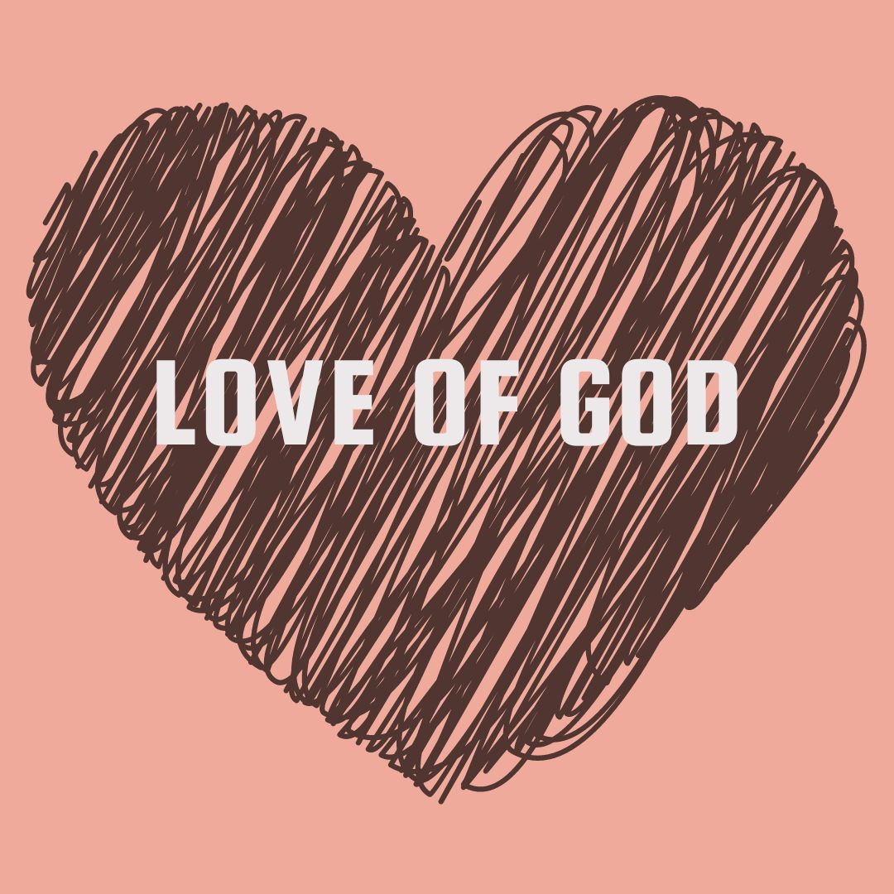

Premam
Premam may be defined as the love of God.
Premam is the highest stage of love because it is without any expectation of exchange or return.
It is stated in Vedic scriptures that one who has attained premm is the most perfect human being.
Practice of premam :-
* Chant HARE KRSHNA MAHAMANTRA everyday without fail and offence.
* After chanting the HARE KRSHNA MANTRA, one becomes immediately enhanced in love with Kṛiṣhṇa.
* An example of this kind of love was exhibited by Lord Caitanya.
 By:-
By:-
Ananya Venkataraman - VIII D
Adithi C - VIII B
Sai Jasvitha - VIII B
Links:-
Home
Satyam
Dharmam
Shantam
Premam
Ahimsa
Brahmacharya
 Satya
Dharmam
Shantham
Premam
Ahimsa
Bhramacharya
Satya
Dharmam
Shantham
Premam
Ahimsa
Bhramacharya